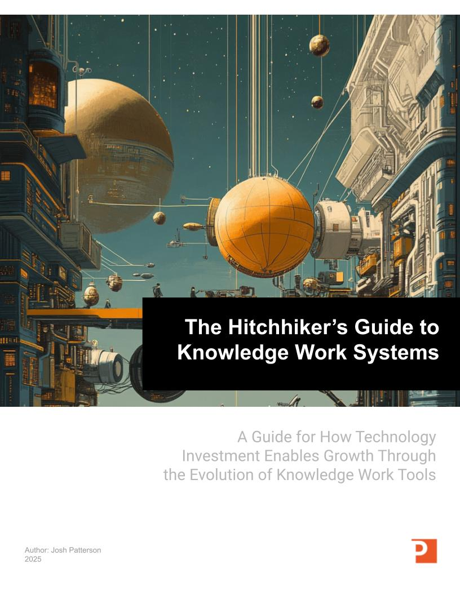

Founder & Chief Executive Officer
Josh Patterson
Twenty-five years of machine learning in the enterprise. Five technology cycles. Two O'Reilly books. One consistent job: helping executive teams tell the difference between what is actually changing and what is just loud.
Josh has been building production AI systems since long before the current cycle had a marketing budget — at the Tennessee Valley Authority, as employee #36 at Cloudera, as VP of Field Engineering at Skymind, and today as CEO of Patterson Consulting. He is not new to this arena, and that is precisely the point.

years of machine learning in the enterprise
employee at Cloudera in the big data era
O'Reilly books, 10+ translations across both titles, cited in peer-reviewed academic papers
years as an industry expert at the KeyBanc Technology Leadership Forum
Cutting through the noise
Everyone has an AI headline. Almost nobody has a read.
The volume around AI is at an all-time high and the signal-to-noise ratio is at an all-time low. Executives are asked to make ten-year infrastructure and workforce decisions against a feed that contradicts itself weekly. What Josh brings into the room is not another forecast — it is pattern recognition earned across five prior cycles that each arrived with the same certainty and the same noise.
The noise
Every one of these ran in a serious outlet. Several ran in the same week. None of them tells you what to do on Monday.
The signal
Jobs change but work remains.
Two hundred and fifty years of precedent say the same thing. The handloom weaver's job disappeared; weaving did not. The bookkeeper's role contracted; financial analysis expanded into territory the bookkeeper never touched. Routine execution compresses, and the judgment that remains becomes the job.
AGI is not going to arrive with your answers.
We can know more than we can tell. The judgment layer of expert work resists codification — which is exactly why the model-scales-and-solves-it story keeps missing its date, and why planning around it is a strategy risk rather than a strategy.
None of it works without the warehouse.
Governed, trustworthy data is the entire difference between an LLM that is a party trick and one your teams can operate on. The unglamorous analytics foundation you already own is the thing that makes AI dependable — and it is where the returns actually show up.
Automation was never the risk. Speed and concentration are.
The danger is change that outpaces an organization's — or a region's — capacity to adapt. The leadership question is not whether to automate, but how to restructure roles upward instead of simply cutting them.
Across five technology cycles
He has seen this movie before.
Grid sensors. Big data. Deep learning. MLOps. Agents. Each one arrived as an inevitability, generated an enormous amount of noise, and then settled into something narrower, more useful, and more boring than the headlines promised. Josh has shipped production systems in every one of them.
Machine learning before anyone called it a platform
At the Tennessee Valley Authority, Josh drove the integration of Apache Hadoop for large-scale storage and processing of smart grid phasor measurement unit (PMU) data — sensor telemetry at a scale the tooling of the day was not built for. His master's thesis, TinyTermite: A Secure Routing Algorithm on the Intel iMote 2 Sensor Network Platform, was published at IAAI-09.
Employee #36 at Cloudera
Josh joined Cloudera as employee #36 and spent three years working through the arc of the big data cycle — from “every company needs a data lake” through consolidation. That is a full round trip of a technology narrative: hype, disillusionment, and the durable subset that actually stuck.
Building the neural network stack, not just using it
As VP of Field Engineering at Skymind — named to Business Insider's “51 Enterprise Startups to Bet Your Career On” — Josh co-founded the Eclipse Deeplearning4j project, an open source deep learning library for the JVM. His work in this period was covered by WIRED.
From models to operations
Two O'Reilly books bracket this period: Deep Learning: A Practitioner's Approach (2017) and the Kubeflow Operations Guide (2021). In parallel, Patterson Consulting built the NVIDIA DGX-based deep learning platform underpinning the UTC CUIP smart city project, and cloud data platforms for research teams including the University of Michigan.
Cognitive labor, made operational
Today Josh leads Patterson Consulting's work on Decision Intelligence Agents — turning high-friction cognitive labor into reliable, repeatable, audit-friendly workflows on the customer's existing data platform. He holds a provisional patent in “Cognitive Labor Compilers.”
Published work
He wrote the practitioner's book. Twice.
Not thought leadership — implementation manuals, written for the engineers who have to make the thing run in production. Both titles have been translated for international markets and are cited in the academic literature.

Deep Learning: A Practitioner's Approach
O'Reilly Media, 2017
Theory of deep learning followed by production workflows on Spark and Hadoop with the DL4J library. Cited by 14 academic papers tracked by the ACM and translated into at least seven world languages.

Kubeflow Operations Guide
O'Reilly Media, 2021
How machine learning infrastructure evolved in the enterprise, and how a Kubernetes-native platform meets the operational needs of a modern organization. Published in two additional translations.

The Hitchhiker's Guide to Knowledge Work Systems
Online, in progress
An ongoing online book on how knowledge work actually changes under automation — the economics, the historical precedent, and the architecture. The reference text behind most of what Josh argues in the room.
Where the perspective comes from
Investors, researchers, clinicians, and city engineers.
A view of a technology cycle is only as good as the number of vantage points it is assembled from. Josh spends his year moving between capital markets, university research, regional industry, and production engineering — which is why his read tends to survive contact with reality.
KeyBanc Capital Markets Technology Leadership Forum
Patterson Consulting has participated as an Industry Expert for a decade at KeyBanc's invitation-only forum in Park City — where institutional investors, public company executives, and private technology founders pressure-test theses on what the next cycle actually is.
Venture capital due diligence
Josh has worked with multiple major venture firms — including Telstra Ventures, Telus Ventures, and Sand Hill Road firms — performing technical due diligence on AI companies. Reading the gap between an AI pitch and an AI product is, quite literally, a job he has been paid to do.
UTC CUIP smart city
Patterson Consulting built out the core NVIDIA DGX-based deep learning platform for the Center for Urban Informatics and Progress smart city project at the University of Tennessee at Chattanooga.
Read the case studyAI in medicine at Erlanger
Patterson Consulting has run workshops for teams at Erlanger on the practical use of AI in medicine — one of the highest-stakes environments there is for separating what a model can do from what it should be trusted to do.
University research
Josh has done research with teams at the University of Michigan and is recognized as an inventor on their system, alongside Patterson Consulting's work building their cloud data platform.
Read the case studyAI Coffee Hour
Josh hosts the AI Coffee Hour podcast series, an ongoing set of unvarnished conversations with practitioners about what is really working in enterprise AI.
Watch the series EpisodesUnderneath the strategy
He can move from the board slide to the loss function without changing gears.
Josh's background runs from complexity theory and metaheuristics — ant colony optimization, secure routing on constrained sensor networks — through the mathematics of neural networks, deep learning, and large language models. That depth is why the strategic advice holds up: he is not repeating a vendor's summary of how the technology works, he has implemented it.
He holds a master's degree in computer science and a bachelor's in business management — a combination that turns out to be exactly the right pair of lenses for a decision about whether an AI investment is real.
Credentials at a glance
- M.S. Computer Science; B.S. Business Management
- Published at IAAI-09 — TinyTermite, secure routing on the Intel iMote 2 sensor network platform
- Co-founder of the Eclipse Deeplearning4j project
- Provisional patent in “Cognitive Labor Compilers”
- Recognized inventor on a University of Michigan system
- Co-author, two O'Reilly Media titles
What he is building now
Decision Intelligence Agents
Patterson Consulting works with executive teams to identify the recurring decisions that have to be made correctly and fast — then designs and deploys agents that integrate with the data platform and governed metrics the company already has, producing consistent, audit-friendly narratives and actions at scale.
The outcome is lower decision latency, fewer escalations driven by ambiguity, and a measurable lift in operational consistency — without asking leaders to become prompt engineers or rebuild their analytics stack.
Bring a real read into the room.
Josh works with executive teams, boards, and investment committees on the questions underneath the AI headlines: what is actually changing in this cycle, what it means for your roles and your data platform, and where the next dollar of AI investment should go. Roundtables, workshops, advisory sessions, and engagements — start with a conversation.